11 Data visualization with ggplot2
In this chapter, we will explore the power of data visualization in R, focusing on the ggplot2 package and its extensions. The ggplot2 package provides a graphical environment for creating a wide range of plots, from basic scatterplots to complex data visualizations. Through examples and practical tips, we will learn the fundamental principles for producing custom data visualizations in R.
11.1 Basic concepts and data preparation
11.1.1 Essential components of ggplot2 data visualizations
The ggplot2 package is an open-source data visualization system for R that is based on the Grammar of Graphics framework. The core idea of ggplot2 is that any plot can be constructed by combining essential components, including:
- Data and coordinate system.
- Geometric objects, such as points, bars, and lines, and statistical transformations, such as grouping data into bins in a histogram.
- Aesthetic mappings that define how variables are mapped to visual properties or aesthetics (e.g., color, size, shape) of the graph.
- Theme that style all the visual elements not directly related to the data, such as the background color and the width of the grid lines.
- Facet that determines how to split and display the data in a matrix of panels, allowing for the visualization of different data segments in separate, comparable panels, also known as small multiples.
Understanding ggplot2 requires thinking of a figure as being built from multiple layers (FIGURE 11.1).
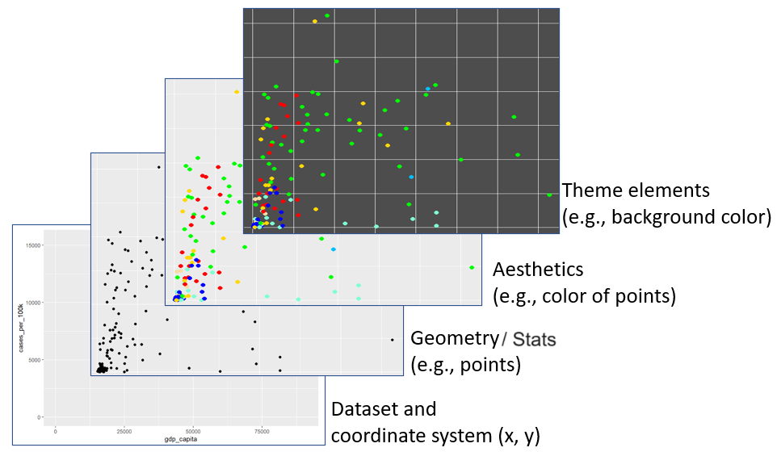
11.1.2 Covid-19 data
In this Chapter, we will visually explore the association between a country’s wealth and its COVID-19 cases. However, other factors, such as testing rate, may also be related to both wealth and COVID-19 cases. For example, wealthier countries often have national programs for distributing tests and providing self-testing guidance, along with more advanced infrastructure for regularly reporting results to centralized organizations. Conversely, developing countries may face limitations in testing resources, which can lead to underreporting of cases.
covid_data <- read_excel(here("data", "covid19_dat.xlsx"))Let’s have a look at the types of variables:
glimpse(covid_data)Rows: 155
Columns: 7
$ country <chr> "Afghanistan", "Angola", "Albania", "United Arab Emirates", "Ar…
$ confirmed <dbl> 88740, 36600, 132449, 596017, 4111147, 223643, 30248, 648387, 3…
$ total_tests <dbl> NA, NA, 734790, 53103521, 15508661, 1122295, 19261758, 47725434…
$ region <chr> "South Asia", "Sub-Saharan Africa", "Europe & Central Asia", "M…
$ income <chr> "Low income", "Lower middle income", "Upper middle income", "Hi…
$ population <dbl> 38928341, 32866268, 2837743, 9890400, 45376763, 2963234, 256870…
$ gdp_capita <dbl> 549.4, 2890.9, 5064.1, 41420.5, 8692.7, 4364.3, 56307.3, 47008.…The data frame contains 155 rows, each representing a country, and 7 columns, which are described as follows:
country: Country name.
confirmed: Confirmed Covid-19 cases recorded from January 1, 2020, to September 9, 2021.
total_tests: Test counts recorded from January 1, 2020, to September 9, 2021.
region: Country region (East Asia & Pacific, Europe & Central Asia, Latin America & Caribbean, Middle East & North Africa, North America, South Asia, Sub-Saharan Africa).
income: Country income group (“Low income”, “Lower middle income”, “Upper middle income”, “High income”).
population: Country population.
gdp_capita: Country gross domestic product (GDP) per capita, measured in 2010 US-dollars.
11.1.3 Data preparation for the plots
We will compute confirmed cases per 100,000 inhabitants and tests per capita. Additionally, to ensure accurate analysis, it’s essential to use the appropriate data types for the variables. Therefore, we will convert the region and income variables from character to factor.
dat <- covid_data |>
mutate(region = factor(region),
income = factor(income, levels = c("Low income", "Lower middle income",
"Upper middle income", "High income")),
cases_per_100k = round((confirmed / population) * 100000, digits = 1),
tests_per_capita = round(total_tests / population, digits = 2)) |>
select(country, gdp_capita, cases_per_100k, tests_per_capita, region, income)After data preparation, we have a subset containing the following six variables:
glimpse(dat)Rows: 155
Columns: 6
$ country <chr> "Afghanistan", "Angola", "Albania", "United Arab Emirates"…
$ gdp_capita <dbl> 549.4, 2890.9, 5064.1, 41420.5, 8692.7, 4364.3, 56307.3, 4…
$ cases_per_100k <dbl> 228.0, 111.4, 4667.4, 6026.2, 9060.0, 7547.3, 117.8, 7271.…
$ tests_per_capita <dbl> NA, NA, 0.26, 5.37, 0.34, 0.38, 0.75, 5.35, 0.36, NA, 1.26…
$ region <fct> South Asia, Sub-Saharan Africa, Europe & Central Asia, Mid…
$ income <fct> Low income, Lower middle income, Upper middle income, High…It’s apparent that there are missing values in the dataset, denoted as NA. These missing values can affect the appearance of plots created with ggplot2. We can determine the number of missing values for each variable in the data frame as follows:
11.2 Basic steps for creating a plot with ggplot
The ggplot2 package is part of the tidyverse ecosystem and is automatically installed when we install the tidyverse package. Additionally, ggplot2 is one of the core packages included in the tidyverse, so it is loaded into an R session when we run the command library(tidyverse).
11.2.1 Initializing a ggplot
The ggplot() function has two basic named arguments. The first argument, data, specifies the dataset that will be used for the plot. The second argument, mapping, defines how variables are mapped to the plot’s aesthetics.
First, we pass our dataset “dat” to the data argument of the ggplot() function. Then, within the aes() function, we map the variable gdp_capita to the x-axis position and the variable cases_per_100K to the y-axis position (FIGURE 11.2):
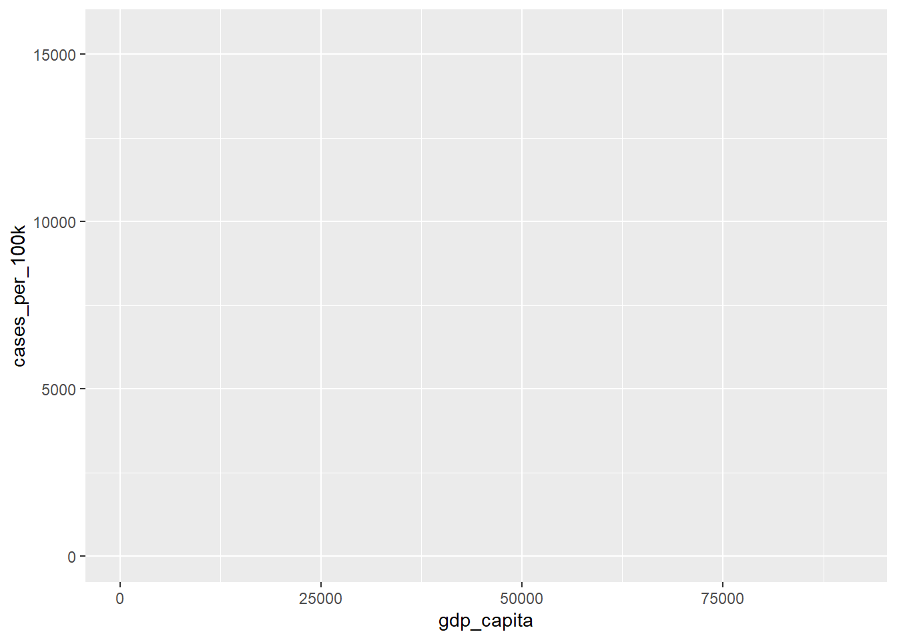
After running the code, axis elements, such as titles, are automatically added based on the selected variables. However, we haven’t specified any geometric objects yet to visually represent the data.
Note that it’s common practice not to explicitly specify the names of the arguments data and mapping. Therefore, the following command is equivalent:
11.2.2 Adding geometry
Geometric objects, or geoms, are fundamental components of ggplot2 visualizations. Each geom has a corresponding function named with the prefix geom_, followed by the specific shape it represents. For example, geom_point is used for scatterplots, geom_bar() for bar charts, and geom_line() for line plots (TABLE 11.1). It is important to note that every geom_ function has a corresponding default stat argument. For example, stat="identity", means no transformation of the raw data, while stat="count" calculates the frequency of each category on the x-axis in a bar plot.
| Geometry | Stat | Example |
|---|---|---|
| geom_point() | identity | 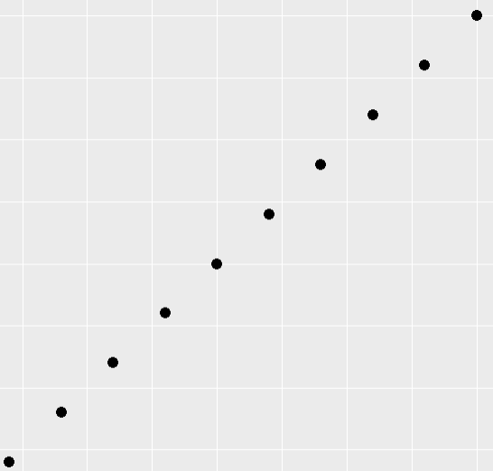 |
| geom_line() | identity | 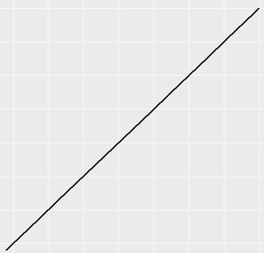 |
| geom_text() | identity | 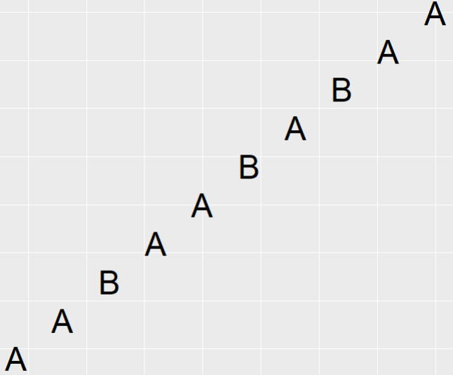 |
| geom_histogram() | bin | 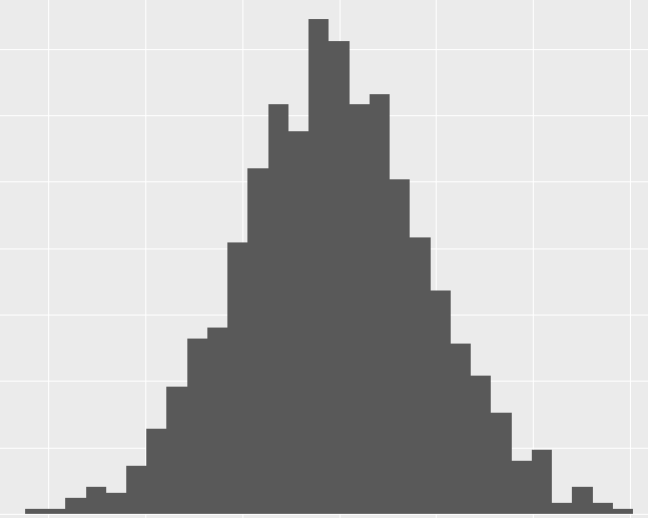 |
| geom_density() | density | 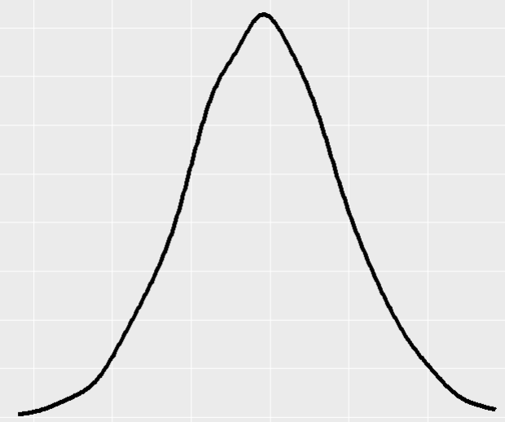 |
| geom_bar() | count | 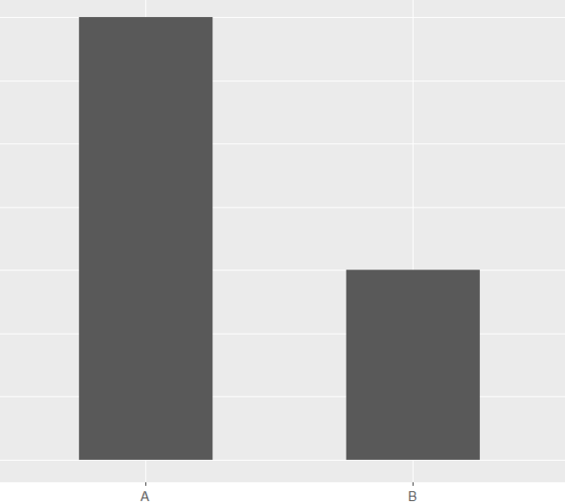 |
| geom_boxplot() | boxplot | 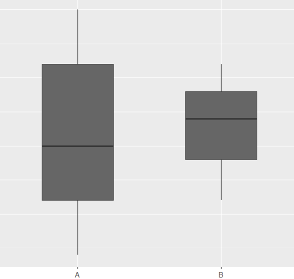 |
Suppose we want to explore the association between gdp_capita and cases_per_100k; in that case, a scatterplot would be the most suitable visualization, with each point representing a country (FIGURE 11.3). We’ll create this scatter plot by adding points with the geom_point() layer, as shown in the code. The plus sign (+) at the end of the first line indicates that the geom_point() layer is being added to the base plot1. Notably, the geom_point() layer inherits the x and y aesthetics specified in the ggplot() function.
1 A new package, tidyplots, inspired by the philosophy of ggplot2, has been developed to use the |> operator instead of + for layering components (Engler 2025).
ggplot(dat, aes(x = gdp_capita, y = cases_per_100k)) +
geom_point()Warning: Removed 3 rows containing missing values or values outside the scale range
(`geom_point()`).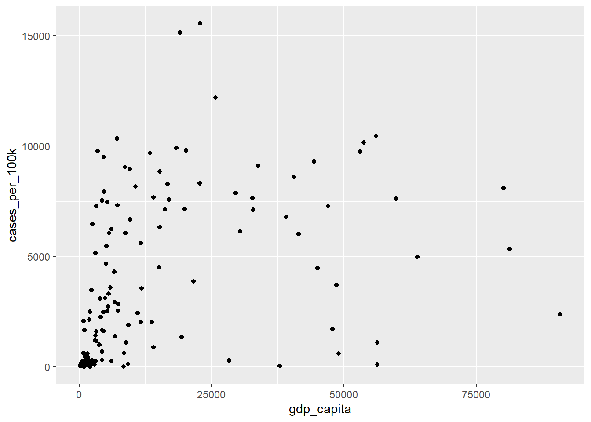
The warning message indicates that three rows have been removed because they contain missing values in these two variables. Note that in most of the subsequent plots, warning messages for missing data will not be displayed in the output.
11.2.3 Adding aesthetics to geometry
Each geom has a set of aesthetics that control its visual properties. For example, geom_point(), used for scatter plots, provides several aesthetics to customize the appearance of its points: x (required), y (required), alpha, color, fill, group, shape, size, stroke. Notably, to incorporate additional data variables into the plot, we can map these variables to aesthetics such as color, shape, and size.
11.2.3.1 color aesthetics
Color is an important characteristic of plots, but choosing the right colors and using them effectively are essential for clear communication. Color palettes (or colormaps) are classified into three main categories in ggplot2:
- Sequential (continuous or discrete) palette that is used for quantitative data. This palette typically uses a single base color (monochromatic) and creates a gradient by varying its lightness, indicating the increasing or decreasing values within our data.
- Diverging palette consists of two color gradients that converge at a center point. This type of palette is particularly useful when visualizing data with both positive and negative values or ranges that have two opposing extremes centered around a baseline value.
- Qualitative palette that is used mainly for categorical data. This palette is consisted from a discrete set of distinct colors with no implied order.
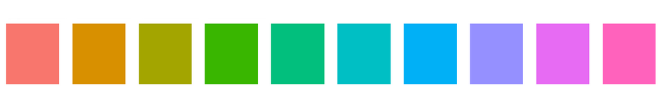
For example, we can add a color argument within the aes() function to group the points by the categorical variable region, as shown below:
ggplot(dat, aes(x = gdp_capita, y = cases_per_100k)) +
geom_point(aes(color = region)) 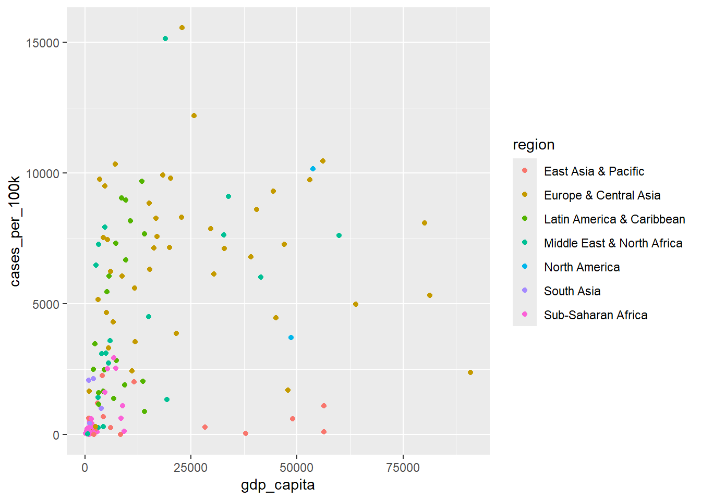
The color argument inside the aes() function mapped the data of the categorical variable region to the color aesthetic of geom_point(). This caused ggplot2 to automatically apply a qualitative color palette. Additionally, ggplot2 generated a legend to display the correspondence between the regions and their respective colors.
It is important to understand the difference between including an aesthetic argument inside or outside of the aes() function. For example, let’s run the following code:
ggplot(dat, aes(x = gdp_capita, y = cases_per_100k)) +
geom_point(color = "deeppink") 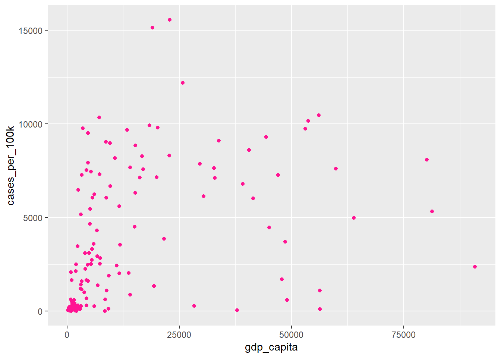
In this case, we set the color argument to a fixed value (“deeppink”) in the geom_point() function instead of using aes(), so ggplot2 changed the color of the points “globally”.
In R, colors can be specified in quotes either by name (e.g., “deeppink”) or as a hexadecimal color (hex code) that starts with a # (e.g., #FF1493). The main advantage of the hexadecimal color system is its compactness and flexibility, allowing us to select any desired color precisely. In the TABLE 11.2, we present examples of colors and their corresponding hex codes:
| Name | Hex code |
|---|---|
| chartreuse2 | #76EE00 |
| blue | #0000FF |
| deeppink | #FF1493 |
| black | #000000 |
Note
ggplot2 understands both color and colour as well as the short version col.
11.2.3.2 shape aesthetics
The different points shapes symbols commonly used in R are shown in the FIGURE 11.6 :
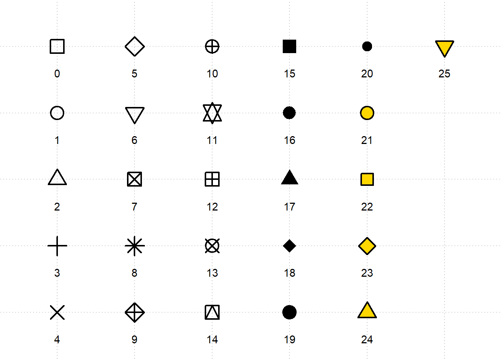
By default, in FIGURE 11.5, geom_point() uses shape 19, which represents a solid circle. If we choose a shape between 21 and 25, we can specify both the color and fill aesthetics for the points. The FIGURE 11.7 - FIGURE 11.9 demonstrate how to configure the color and fill arguments for shape 24, which represents a triangle.
ggplot(dat, aes(x = gdp_capita, y = cases_per_100k)) +
geom_point(shape = 24) 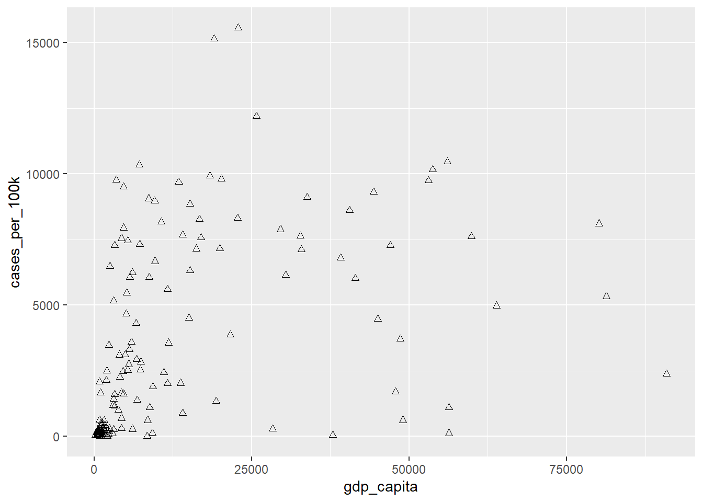
ggplot(dat, aes(x = gdp_capita, y = cases_per_100k)) +
geom_point(shape = 24, color = "red") 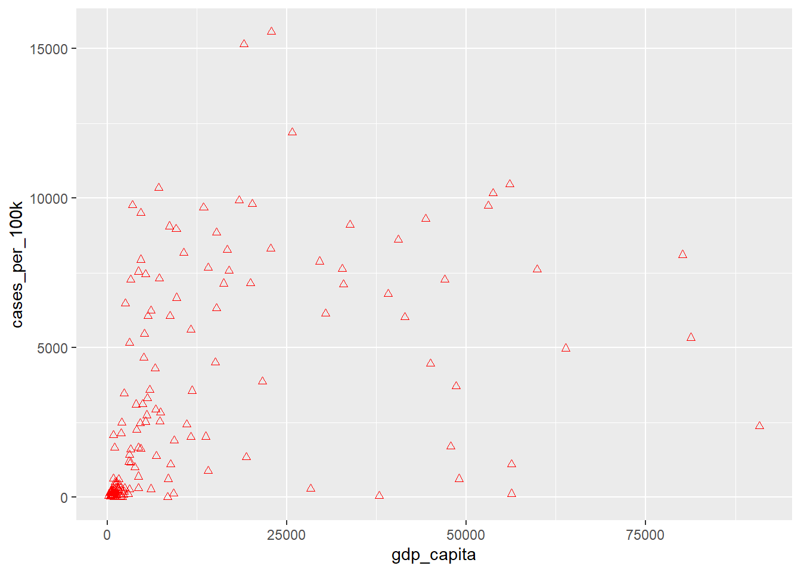
ggplot(dat, aes(x = gdp_capita, y = cases_per_100k)) +
geom_point(shape = 24, color = "red", fill = "yellow")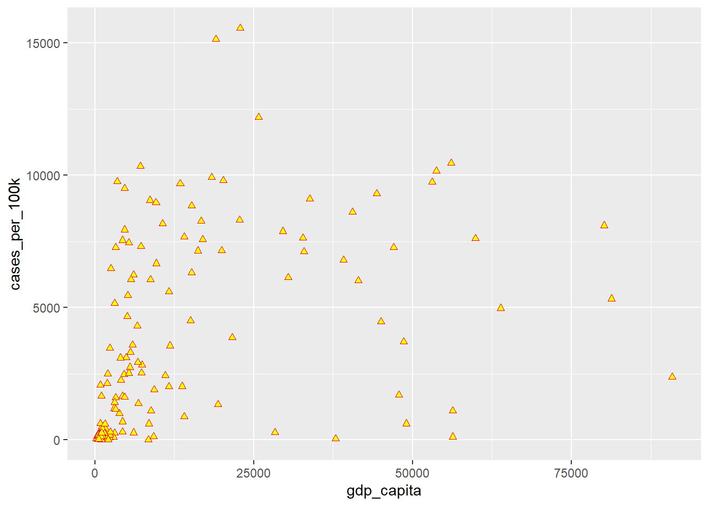
NOTE
- The point shapes 0 to 14 have an outline (we use “color” to set the outline color).
- The point shapes 15 to 20 are solid shapes (we use “color” to set their color).
- Point shapes 21 to 25 allow us to control both the outline and fill colors separately (we use “color” to set the color of the outline and “fill” to set the fill color).
Now, let’s group the points by the region variable and use different point shapes rather than colors, as shown below:
ggplot(dat, aes(x = gdp_capita, y = cases_per_100k)) +
geom_point(aes(shape = region))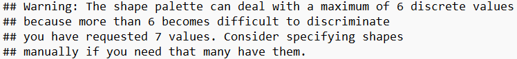
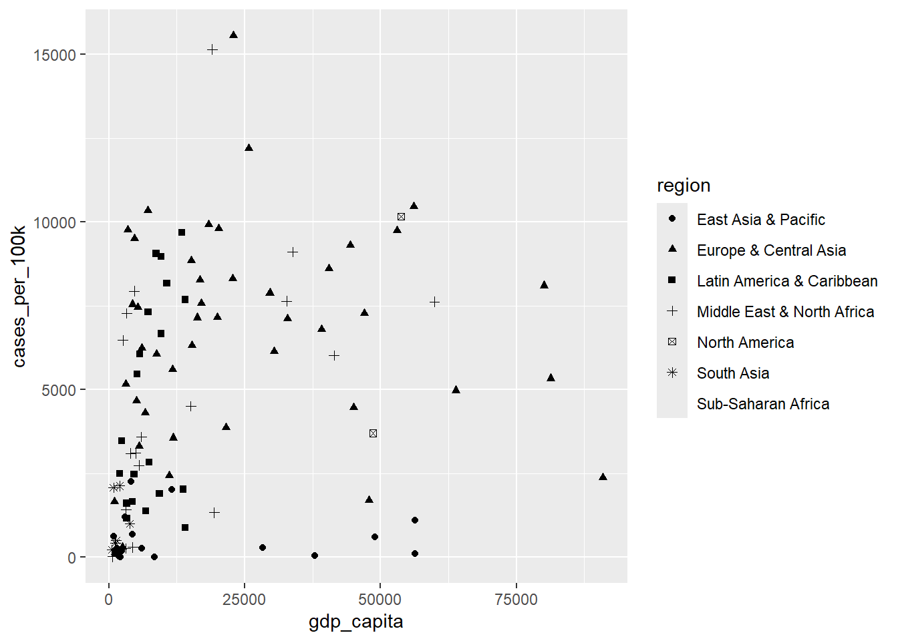
A warning message in the console indicates that ggplot2 by default allows only six distinct point shapes to be displayed in the plot. In our case, the region variable has seven levels, exceeding the number of available shapes. However, we will see how to change this using appropriate scales.
11.2.3.3 size aesthetics
By mapping a third numeric variable, such as tests_per_capita, to the size aesthetic, we create a “bubble” plot. This type of graph allows for the visualization of multiple data points based on three dimensions. This means that in addition to the variables represented on the x-axis and y-axis, the size of each point is proportional to the value of the third variable.
ggplot(dat, aes(x = gdp_capita, y = cases_per_100k)) +
geom_point(aes(size = tests_per_capita))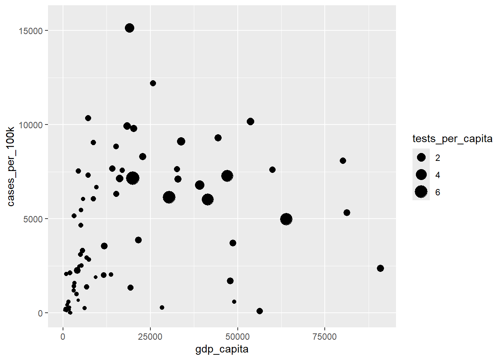
11.3 Adding a new geom layer (text information for each point)
Each point in our scatterplot corresponds to a unique country. Now, let’s enhance it by labeling each data point with the corresponding country name. The geom_text_repel() function from the add-on package ggrepel allows us to add text labels for each data point that repel away from each other to avoid overlapping of the text. To achieve this, we define label = country argument inside the aes() of the geom_text_repel() function.
ggplot(dat, aes(x = gdp_capita, y = cases_per_100k)) +
geom_point(aes(size = tests_per_capita)) +
geom_text_repel(aes(label = country), seed = 123)Warning: Removed 76 rows containing missing values or values outside the scale range
(`geom_point()`).Warning: Removed 3 rows containing missing values or values outside the scale range
(`geom_text_repel()`).Warning: ggrepel: 107 unlabeled data points (too many overlaps). Consider increasing
max.overlaps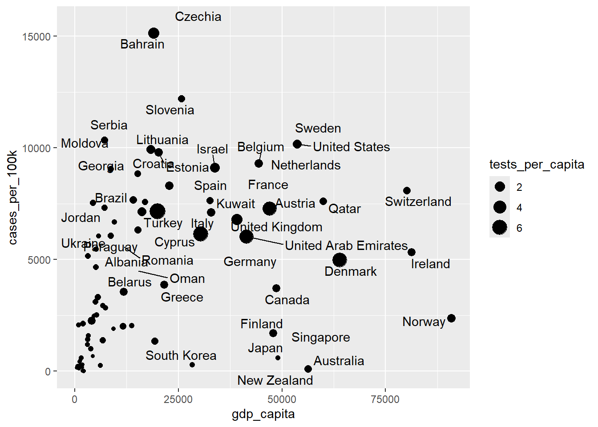
The warning messages indicate that the plot is impacted by missing data in the variables used. Notably, a total of 79 data points, representing countries, are absent from the plot due to missing values (primarily because of NAs in the tests_per_capita variable). Furthermore, a second warning notes that the geom_text_repel() function encounters difficulties in labeling all data points due to text overlap.
11.4 Modifying the default settings of the plot with scales
While ggplot2 provides default aesthetics for various geoms, modifications are often crucial for creating plots that are both informative and visually compelling. Scale functions offer a wide range of customization options. We can control the scaling of axes, choosing between linear, logarithmic, or other options to ensure our data is presented accurately. Furthermore, we can manipulate the visual appearance of the geoms themselves. For example, by adjusting the color and shape of the points or lines, we can highlight specific patterns and encode additional information into our visualizations.
11.4.1 Modifying the scale of the axis
We will apply a logarithmic transformation (base 10) to the scale of the y-axis. This scaling compresses larger values on the y-axis and expands smaller ones, facilitating the visualization of data points across the entire range.
ggplot(dat, aes(x = gdp_capita, y = cases_per_100k)) +
geom_point(aes(size = tests_per_capita)) +
geom_text_repel(aes(label = country), seed = 123) +
scale_y_log10()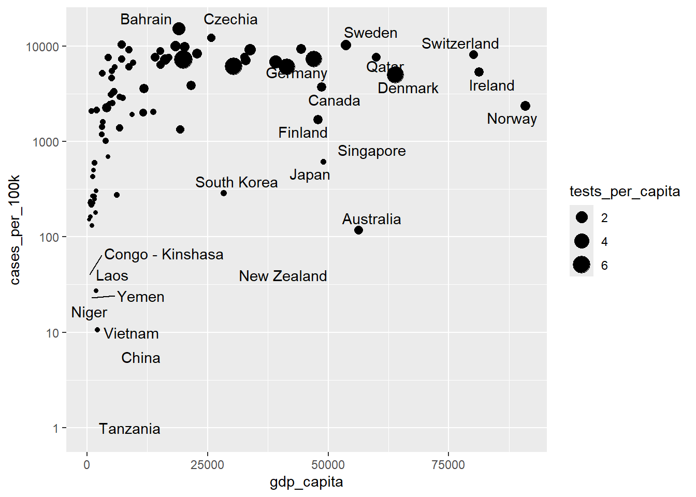
We can use scale_y_continuous(trans='log10') as an alternative to scale_y_log10(). Both functions achieve the same result of applying a logarithmic scale to the y-axis.
11.4.2 Modifying the default point shapes
Let’s add a new dimension to the FIGURE 11.13 by shaping points according to the region variable. We previously discussed the warning message that arises when there are more levels in the region variable than available shapes in ggplot. However, we can manually specify shapes for each level using scales. For example, we can select the following shapes from FIGURE 11.6:
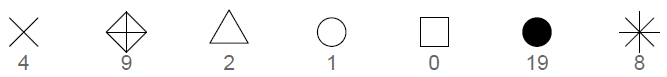
In FIGURE 11.14 two scatterplots are shown: (a) “Default,” which uses a standard set of point shapes to represent the different regions, and (b) “Modified,” which customizes the point shapes by manually assigning distinct symbols to each region using scale_shape_manual().
# default
ggplot(dat, aes(x = gdp_capita, y = cases_per_100k)) +
geom_point(aes(size = tests_per_capita, shape= region)) +
geom_text_repel(aes(label = country), seed = 123) +
scale_y_log10()
# modified
ggplot(dat, aes(x = gdp_capita, y = cases_per_100k)) +
geom_point(aes(size = tests_per_capita, shape= region)) +
geom_text_repel(aes(label = country), seed = 123) +
scale_y_log10() +
scale_shape_manual(values = c(4, 9, 2, 1, 0, 19, 8))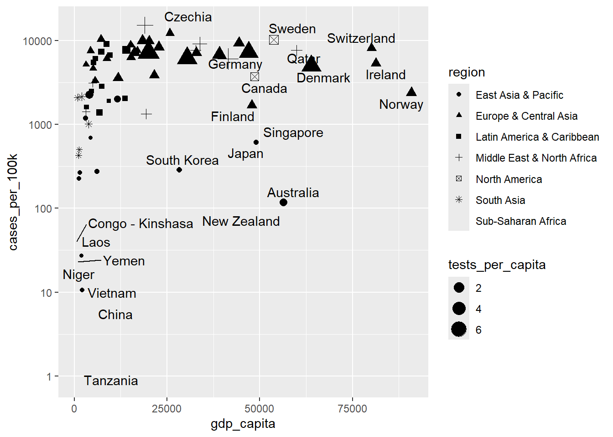
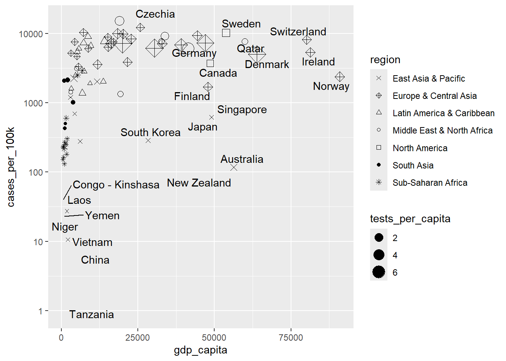
TIP
When mapping a variable to size, it is recommended to avoid mapping another variable to shape. This is because comparing the sizes of different shapes (e.g., a size 4 square versus a size 4 triangle) can be visually challenging for viewers.
11.4.3 Modifying the default colors
A better approach would be to use distinct colors for the various levels of the region variable. The ggsci package offers high-quality color palettes, and we will select the “JCO” palette, which is inspired by the plots in Journal of Clinical Oncology.
We have two options: scale_color_jco() and scale_fill_jco(). We will select the first option because the default shape 19 has not fill aesthetic.
# default
ggplot(dat, aes(x = gdp_capita, y = cases_per_100k)) +
geom_point(aes(size = tests_per_capita, color = region)) +
geom_text_repel(aes(label = country), seed = 123) +
scale_y_log10()
# modified
ggplot(dat, aes(x = gdp_capita, y = cases_per_100k)) +
geom_point(aes(size = tests_per_capita, color = region)) +
geom_text_repel(aes(label = country), seed = 123) +
scale_y_log10() +
scale_color_jco()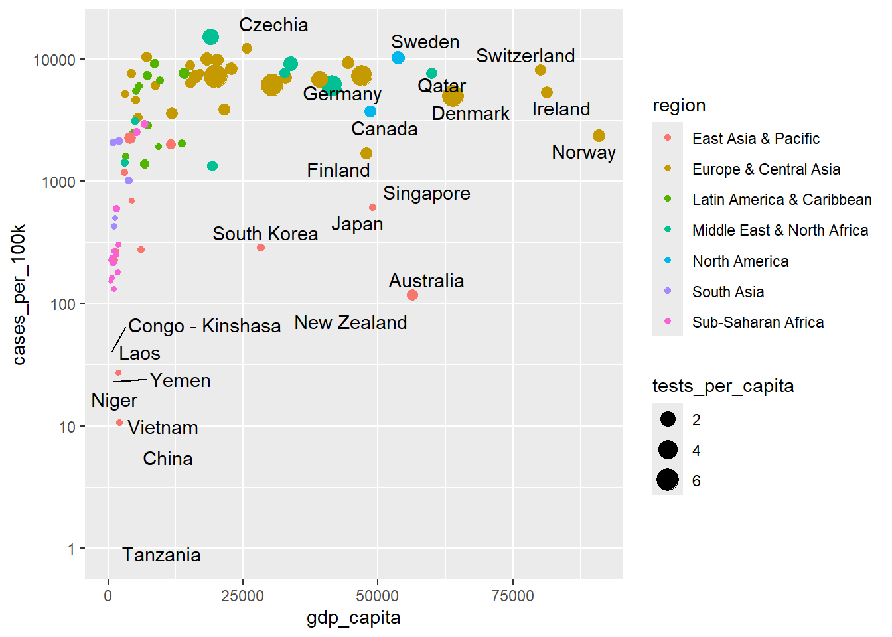
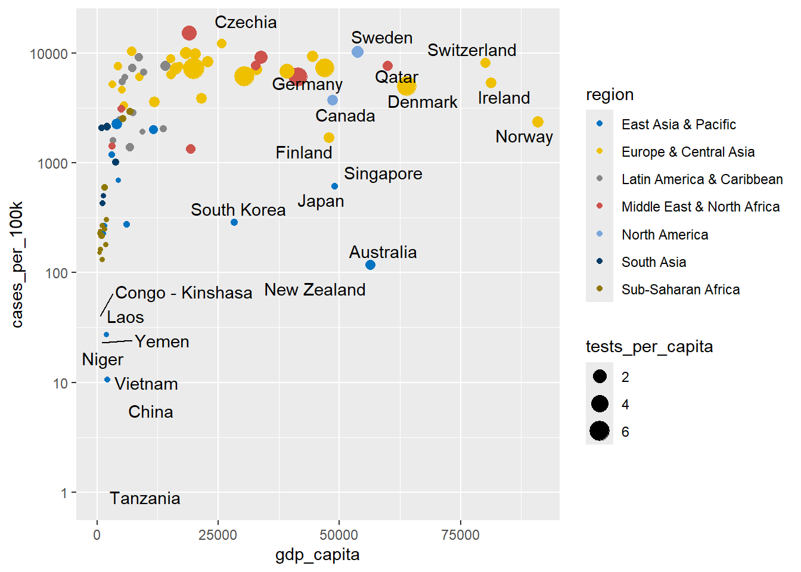
It is important to note that a color palette can be checked with colorblindcheck package to improve graph readability for readers with common color vision deficiency (deuteranopia, protanopia, and tritanopia). The viridis color palette is a great choice, as it is designed to be colorblind-friendly and ensures that visualizations remain accessible to all viewers. More color palettes can be found in the coolors.
11.5 Modifying/setting ggplot labels with labs()
The labs() function allows us to modify or set various labels within our ggplot (FIGURE @ref(fig:p15)). It allows us to customize axis and legend titles, set the main title, subtitle, caption, and tag of the ggplot.
ggplot(dat, aes(x = gdp_capita, y = cases_per_100k)) +
geom_point(aes(size = tests_per_capita, color = region)) +
geom_text_repel(aes(label = country), seed = 123) +
scale_y_log10() +
scale_color_jco() +
labs(x = "GDP per capita ($)", y = "Cases per 100,000 inhabitants",
color = "Region", size = "Proportion tested",
title = str_wrap("Confirmed cases per 100,000 inhabitants,
GDP per capita, and COVID-19 testing rate by country",
width = 75),
subtitle = "May 20, 2021",
caption = "Source Data: Covid-19 related data.", tag = 'A')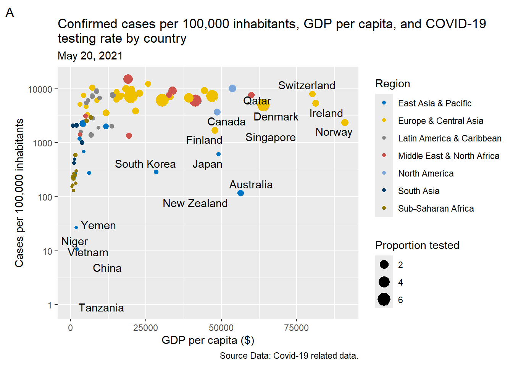
Note that we have also used the str_wrap() function from the stringr package to handle our lengthy plot title.
11.6 Modifying theme elements with theme() function
Theme elements are the non-data elements of a ggplot, including line, text, main title, grid (major, minor), background, and tick marks.
The default appearance of theme elements can be customized using the theme() function. The syntax requires two components: an element name and an element function, structured as: theme(element name = element_function(arguments)).
Element name
We are able to modify the appearance of theme elements in plot, panel, axis, and legend compartments of a simple ggplot (FIGURE 11.17}).
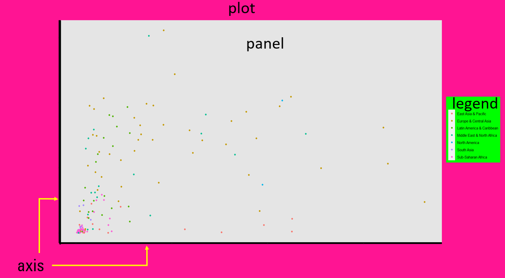
The theme system enables us to specify the appearance of elements for particular compartments of the ggplot by creating element names in the form of compartment.element. For example, we can specify the title element in plot, axis, and legend with the element names plot.title, axis.title, and legend.title, respectively.
Element function
Depending on the type of element that we want to modify, there are three pertinent functions that start with element_:
-
element_line(): specifies the display of lines -
element_text(): specifies the display of text elements -
element_rect(): specifies the display of borders and backgrounds
NOTE
There is also the element_blank() that suppresses the appearance of elements we’re not interested in.
Other features of the ggplot, such as the position of legend, are not specified within an element_function.
For example, if we want to change the color of the axis lines (from black to red) and modify their width, the syntax would be as follows:
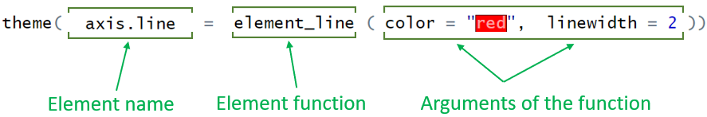
Next, we present examples for each element function to help understand these concepts.
11.6.1 element_line()
With element_line(), we can customize all the lines of the ggplot that are not part of data. FIGURE 11.18 shows the basic line elements (axis lines, tick marks, and grid lines) that we can modify in a simple ggplot.
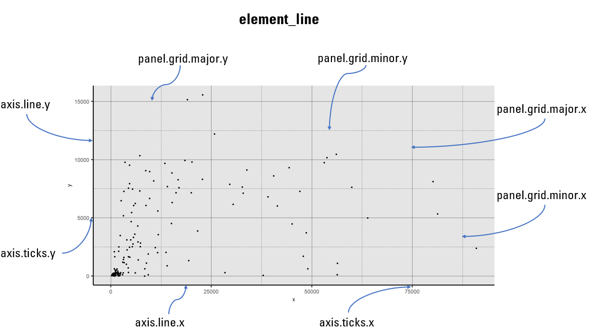
11.6.1.1 Modifying the X and Y axis lines
The available options include:
- To modify both X and Y axes:
axis.line = element_line() - To modify only X axis:
axis.line.x = element_line() - To modify only Y axis:
axis.line.y = element_line()
Example
While ggplot2 doesn’t display axis lines by default, we can easily add and customize them using the theme() function.
ggplot(dat, aes(x = gdp_capita, y = cases_per_100k)) +
geom_point() +
theme(axis.line.x = element_line(color = "red", linewidth = 1),
axis.line.y = element_line(color = "green", linewidth = 0.6, linetype = 5))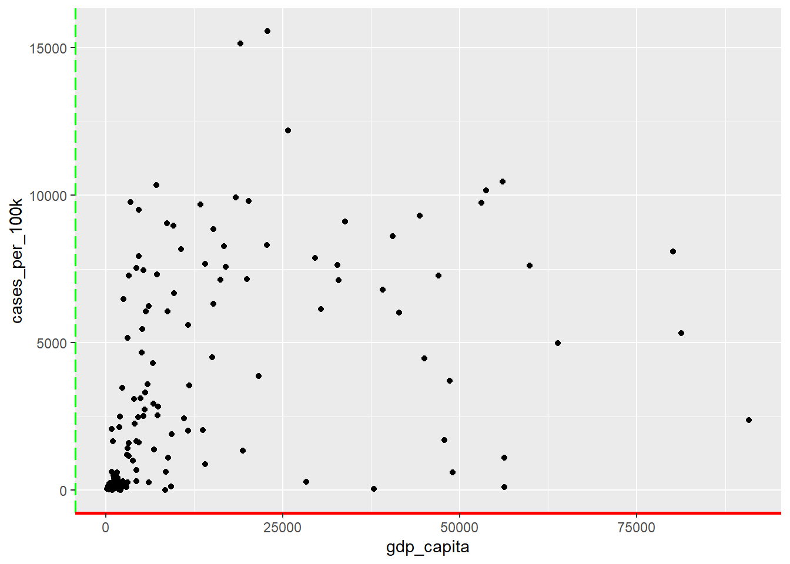
In FIGURE 11.19, we set the x-axis line to red with a width of approximately 0.75 mm (solid line; the unit of linewidth is roughly 0.75 mm), and the y-axis line to green with a width of approximately \(0.75 \times 0.6 = 0.45 \ mm\) and a long dashed linetype. The available line types are presented in FIGURE 11.20.
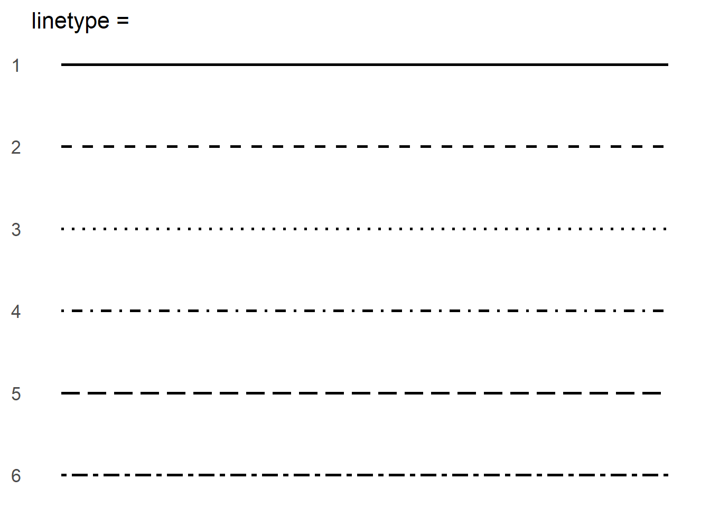
11.6.1.2 Modifying the tick marks on X and Y axes
The available options include:
- To modify both X and Y tick marks:
axis.ticks = element_line() - To modify only X tick marks:
axis.ticks.x = element_line() - To modify only Y tick marks:
axis.ticks.y = element_line()
Example
Similar adjustments can be applied to the x-axis and y-axis tick marks, as shown in FIGURE 11.21).
ggplot(dat, aes(x = gdp_capita, y = cases_per_100k)) +
geom_point() +
theme(axis.ticks.x = element_line(color = "red", linewidth = 3),
axis.ticks.y = element_line(color = "green", linewidth = 3))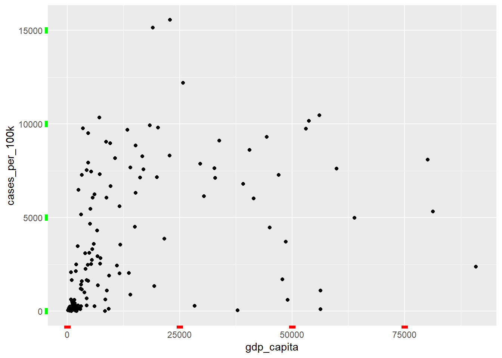
11.6.1.3 Modifying the major and minor grid lines in the panel
Grid lines come in two types: major grid lines, which align with the tick marks, and minor grid lines, which are positioned between the major ones. In FIGURE 11.22 - FIGURE 11.23, we present examples of modifying both major and minor grid lines.
Major grid
The available options include:
- To modify major grid lines:
panel.grid.major = element_line() - To modify major vertical grid lines:
panel.grid.major.x = element_line() - To modify major horizontal grid lines:
panel.grid.major.y = element_line()
Example
ggplot(dat, aes(x = gdp_capita, y = cases_per_100k)) +
geom_point() +
theme(panel.grid.major.x = element_line(color = "red", linewidth = 0.45),
panel.grid.major.y = element_line(color = "green", linewidth = 0.45))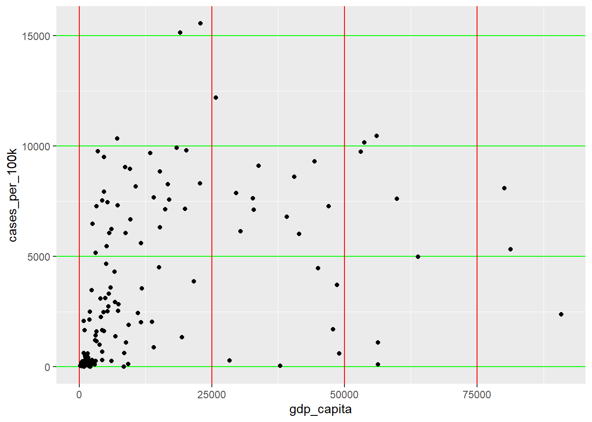
Minor grid
The available options include:
- To modify minor grid lines:
panel.grid.minor = element_line() - To modify minor vertical grid lines:
panel.grid.minor.x = element_line() - To modify minor horizontal grid lines:
panel.grid.minor.y = element_line()
ggplot(dat, aes(x = gdp_capita, y = cases_per_100k)) +
geom_point() +
theme(panel.grid.minor.x = element_line(color = "red", linewidth = 0.45,
linetype = 2),
panel.grid.minor.y = element_line(color = "green", linewidth = 0.45,
linetype = 2))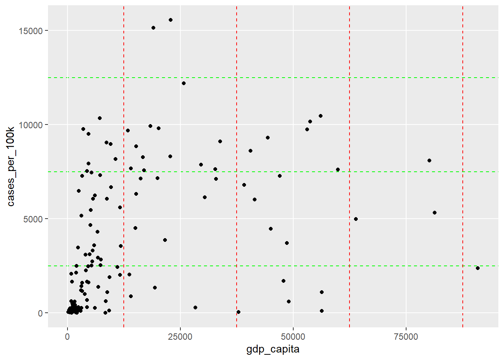
We can customize all of these grid lines by overriding their default settings (FIGURE 11.24).
ggplot(dat, aes(x = gdp_capita, y = cases_per_100k)) +
geom_point() +
theme(panel.grid.major = element_line(color = "blue", linewidth = 0.55),
panel.grid.minor = element_line(color = "deeppink", linewidth = 0.35,
linetype = 2))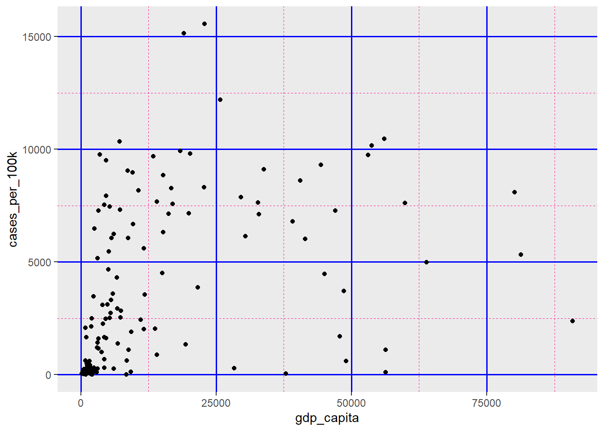
11.6.2 element_text()
The element_text() function controls non-data related text elements in the ggplot, allowing for customization of axis labels and titles, legend text elements, and main plot features such as title, subtitle, and caption (FIGURE 11.25).
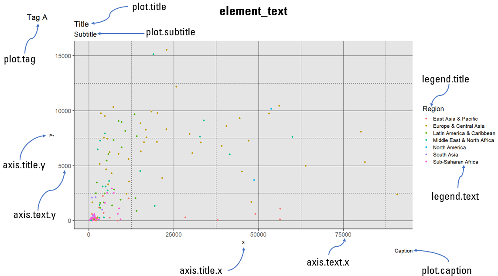
By making adjustments to font size, color, and style, we can enhance the quality of our ggplot2 graphics beyond basic data representation.
11.6.2.1 Modifying the title text of X and Y axes
The available options include:
- To modify both X and Y axis titles:
axis.title = element_text() - To modify X axis title:
axis.title.x = elemeitlent_text() - To modify Y axis title:
axis.title.y = element_text()
Example
Using the theme() function, we can improve the default appearance of axis title text by setting colors, adjusting size, or altering the angle (FIGURE 11.26).
ggplot(dat, aes(x = gdp_capita, y = cases_per_100k)) +
geom_point(aes(color = region)) +
labs(x = "GDP per capita ($)", y = "Cases per 100,000 inhabitants",
color = "Region", size = "Proportion tested",
title = str_wrap("Confirmed cases per 100,000 inhabitants,
GDP per capita, and COVID-19 testing rate by country",
width = 75),
subtitle = "May 20, 2021", caption = "Source Data: Covid-19 related data.",
tag = 'A') +
theme(axis.title.x = element_text(color = "red", size = 12, angle = 10),
axis.title.y = element_text(color = "green", size = 10))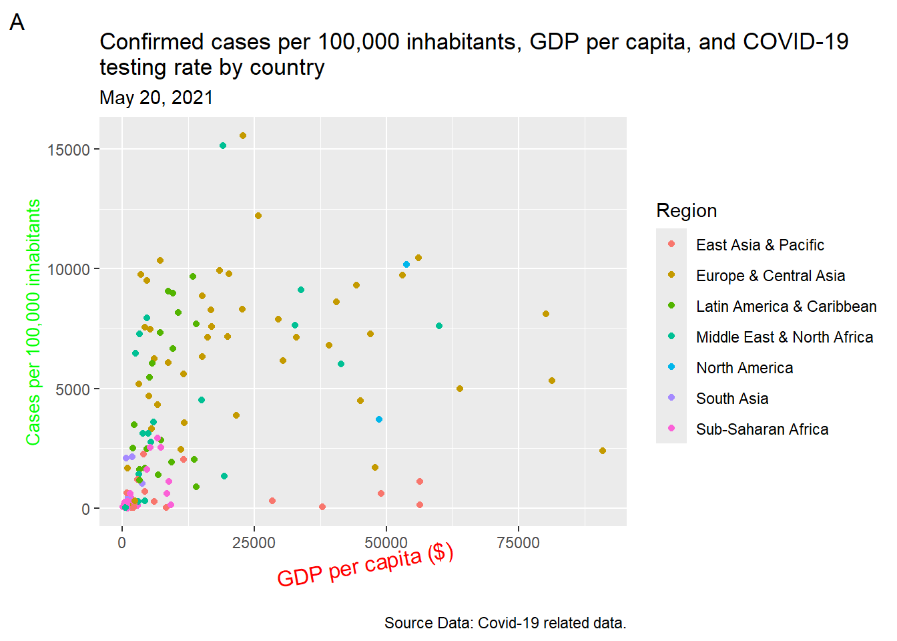
11.6.2.2 Modifying the label text of X and Y axes
The available options include:
- To modify both X and Y axis text:
axis.text = element_text() - To modify X axis text:
axis.text.x = element_text() - To modify Y axis text:
axis.text.y = element_text()
Similar customization can be made to the axis label text, as shown in FIGURE 11.27.
ggplot(dat, aes(x = gdp_capita, y = cases_per_100k)) +
geom_point(aes(color = region)) +
labs(x = "GDP per capita ($)", y = "Cases per 100,000 inhabitants",
color = "Region", size = "Proportion tested",
title = str_wrap("Confirmed cases per 100,000 inhabitants,
GDP per capita, and COVID-19 testing rate by country",
width = 75),
subtitle = "May 20, 2021", caption = "Source Data: Covid-19 related data",
tag = 'A') +
theme(axis.text.x = element_text(color = "red", size = 12,
face="bold", angle = 90),
axis.text.y = element_text(color = "green", size = 10))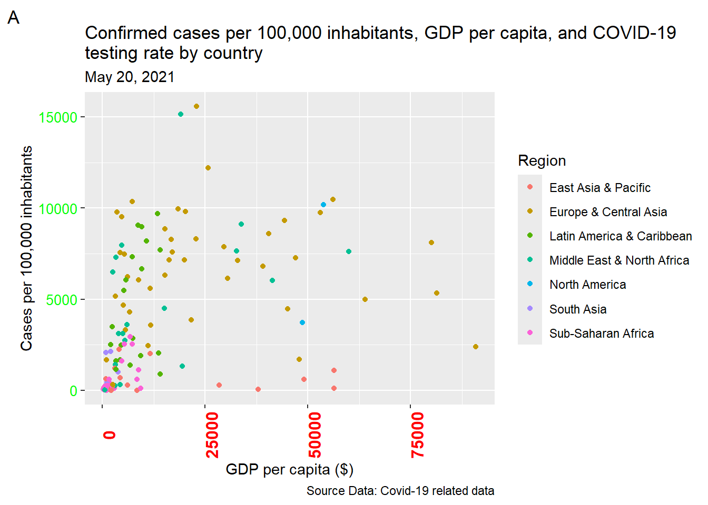
11.6.2.3 Modifying the plot’s title, subtitle, caption, and tag
Titles, subtitles, captions, and tags are essential components for providing context and information about plots. When creating plots, it’s important to carefully consider the content, placement, font size, and colors of these textual elements to effectively communicate the intended message.
ggplot(dat, aes(x = gdp_capita, y = cases_per_100k)) +
geom_point(aes(color = region)) +
labs(x = "GDP per capita ($)", y = "Cases per 100,000 inhabitants",
color = "Region", size = "Proportion tested",
title = str_wrap("Confirmed cases per 100,000 inhabitants,
GDP per capita, and COVID-19 testing rate by country",
width = 75),
subtitle = "May 20, 2021", caption = "Source Data: Covid-19 related data",
tag = 'A') +
theme(plot.title = element_text(color = "deeppink"),
plot.subtitle = element_text(color = "blue"),
plot.caption = element_text(color = "orange", size = 12),
plot.tag = element_text(color = "green", size = 14))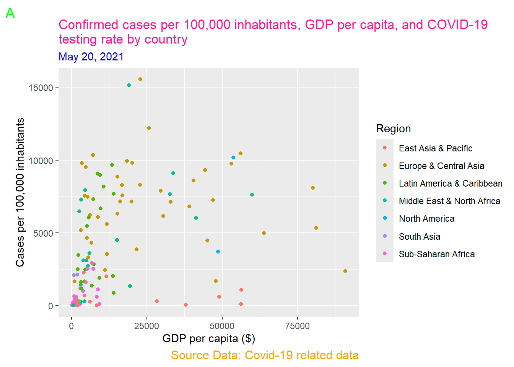
The element_text() functions inside the theme() set the color of the plot title to “deeppink”, the subtitle to “blue”, the caption to “orange” with a font size of 12, and the tag letter to “green” with a font size of 14 (FIGURE 11.28).
11.6.2.4 Modifying the title and text of legend
Using the theme() function we can also modify the appearance of legend title and text properties such as font size and color (FIGURE 11.29).
ggplot(dat, aes(x = gdp_capita, y = cases_per_100k)) +
geom_point(aes(color = region)) +
labs(x = "GDP per capita ($)", y = "Cases per 100,000 inhabitants",
color = "Region", size = "Proportion tested",
title = str_wrap("Confirmed cases per 100,000 inhabitants,
GDP per capita, and COVID-19 testing rate by country",
width = 75),
subtitle = "May 20, 2021", caption = "Source Data: Covid-19 related data",
tag = 'A') +
theme(legend.title = element_text(color = "red", size = 14),
legend.text = element_text(color = "green", size = 10))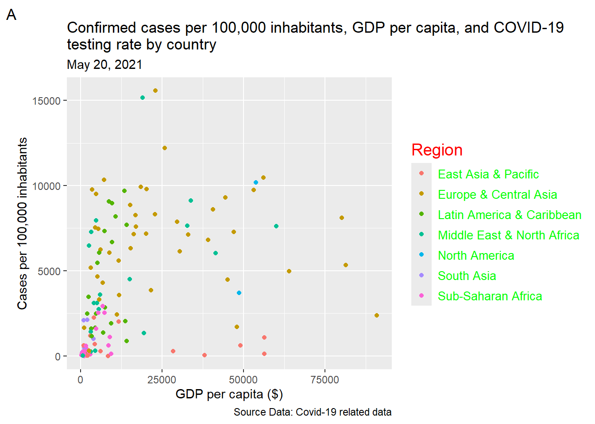
11.6.3 element_rect()
The element_rect() function allows us to manage the appearance of borders and backgrounds for all rectangular components within the graph.
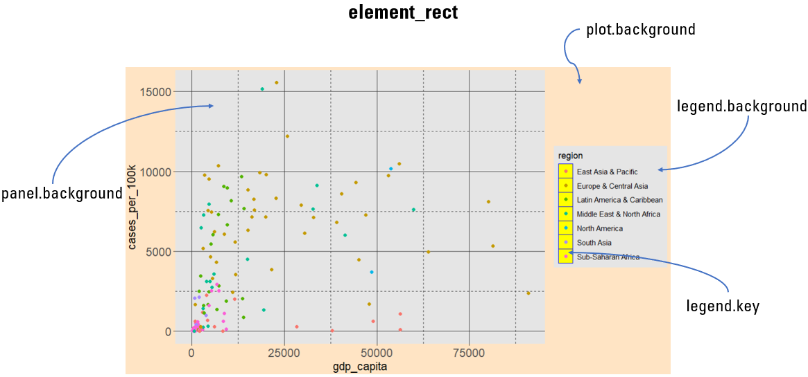
11.6.3.1 Modifying the background color
In Figures @ref(fig:plotbackground)-@ref(fig:keybackground), we present examples of modifying the color of border and background of the various compartments within ggplot.
- Modifying the border and background color of the plot area
ggplot(dat, aes(x = gdp_capita, y = cases_per_100k)) +
geom_point(aes(color = region)) +
labs(x = "GDP per capita ($)", y = "Cases per 100,000 inhabitants",
color = "Region", size = "Proportion tested") +
theme(plot.background = element_rect(color = "green", linewidth = 3,
fill = "deeppink"))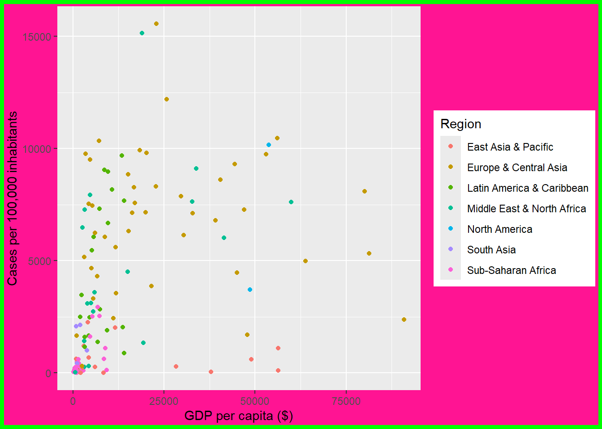
- Modifying the border and background color of the panel area
ggplot(dat, aes(x = gdp_capita, y = cases_per_100k)) +
geom_point(aes(color = region)) +
labs(x = "GDP per capita ($)", y = "Cases per 100,000 inhabitants",
color = "Region", size = "Proportion tested") +
theme(panel.background = element_rect(color = "green", linewidth = 1.2,
fill = "deeppink"))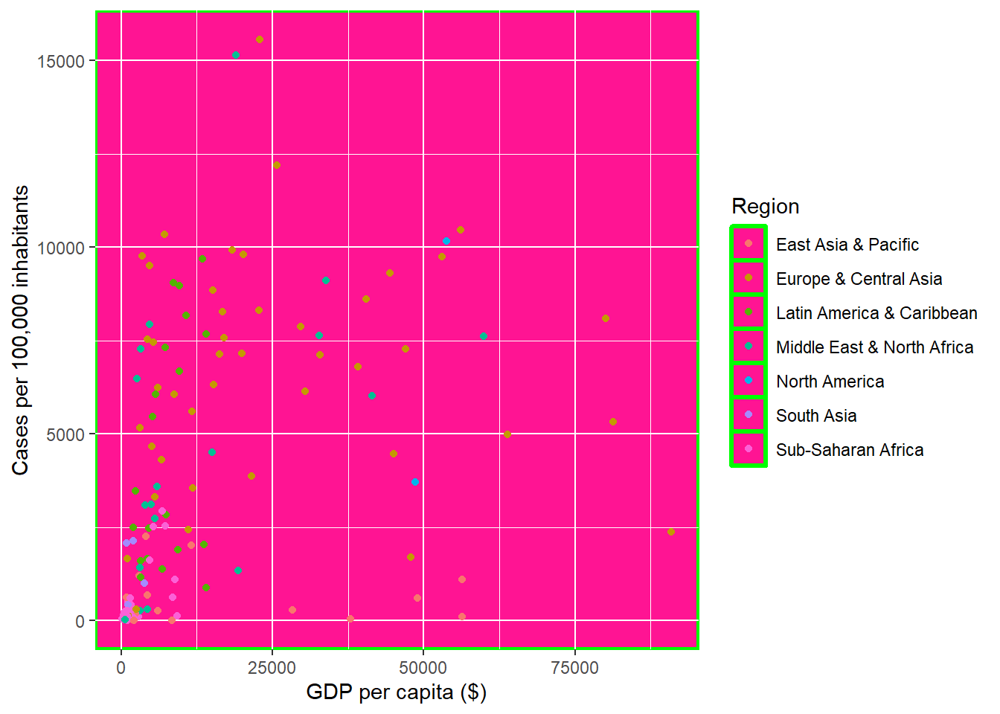
- Modifying the border and background color of legend area
ggplot(dat, aes(x = gdp_capita, y = cases_per_100k)) +
geom_point(aes(color = region)) +
labs(x = "GDP per capita ($)", y = "Cases per 100,000 inhabitants",
color = "Region", size = "Proportion tested") +
theme(legend.background = element_rect(color = "green", linewidth = 1.2,
fill = "deeppink"))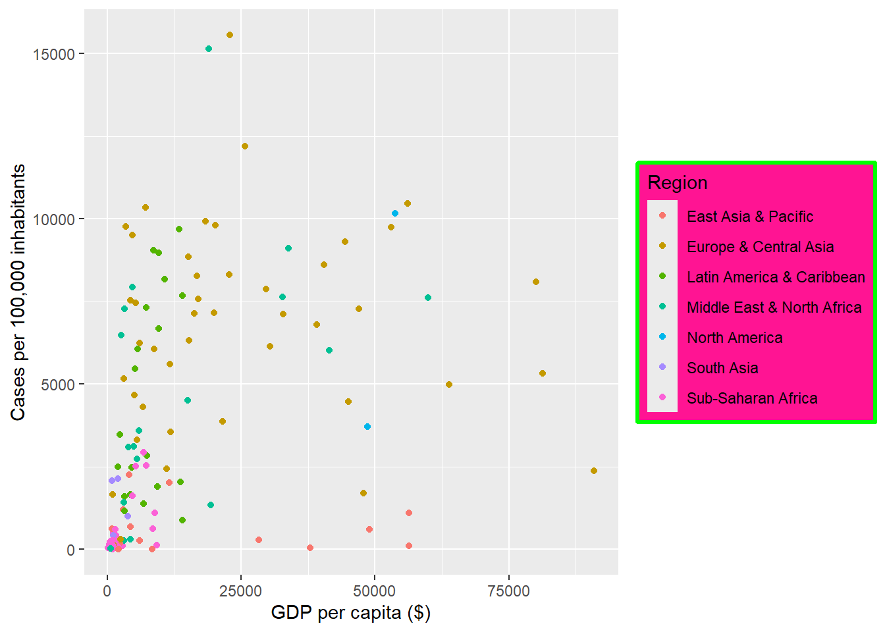
- Modifying the border and background color of legend key area
ggplot(dat, aes(x = gdp_capita, y = cases_per_100k)) +
geom_point(aes(color = region)) +
labs(x = "GDP per capita ($)", y = "Cases per 100,000 inhabitants",
color = "Region", size = "Proportion tested") +
theme(legend.key = element_rect(color = "green", linewidth = 1,
fill = "deeppink"))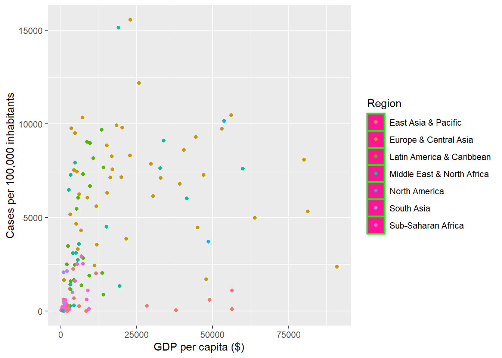
11.6.4 Predefined themes and further customization
The default theme of ggplot is the theme_gray. We can customize the default settings by applying predefined themes, rather than manually adjusting every single theme element. There are ready to use themes from the ggplot2 and ggthemes packages.
Examples of in-build theme from ggplot2:
theme_bw()– dark on light ggplot2 theme.theme_dark()– lines on a dark background instead of light.theme_minimal()– no background annotations, minimal feel.theme_classic()– theme with no grid lines.theme_void()– a completely empty theme.
CAUTION
We must ensure that any theme adjustments are made after applying an in-build theme to guarantee that our modifications override the theme’s default settings.
11.7 Faceting: splitting a plot into multiple panels
In R, the ggplot2 package provides two primary functions to split a plot into multiple panels (small multiples), each displaying a different subset of the data: facet_wrap() and facet_grid().
facet_wrap(): This function arranges panels sequentially based on the levels of a single factor variable and “wrapping” them according to the specified number of columns or rows (FIGURE 11.35 a). We can use it with the formulafacet_wrap(~variable).facet_grid(): This function creates a grid layout, where panels are arranged based on two categorical variables (FIGURE 11.35 b). It’s particularly useful for exploring combinations of two factor variables, and we can use it with the formulafacet_grid(variable1~variable2).
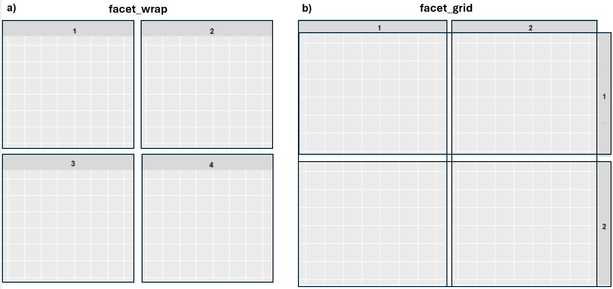
11.7.1 facet_wrap()
Panels are placed next to each other, wrapping based on a specified number of columns or rows. By default, each panel’s facet label is displayed in a strip at the top of the plot.
Example
ggplot(dat, aes(x = gdp_capita, y = cases_per_100k)) +
geom_point(size = 1.5, color = "deeppink", alpha = 0.7) +
geom_text_repel(aes(label = country), seed = 42, box.padding = 0.1,
color = "black", size = 2.5) +
scale_y_continuous(trans = "log10") +
theme_bw() +
facet_wrap(~region, ncol=2)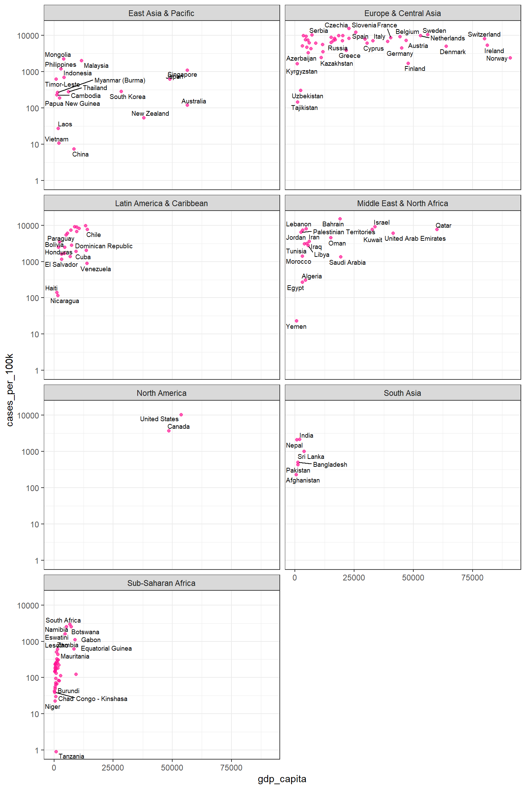
By using facet_wrap(~region, ncol=2), the plot in FIGURE 11.36 is split into panels based on the region variable. The panels are arranged into two columns for better visualization. This allows for easy comparison of the association between gdp_capita and cases_per_100k across different regions.
11.7.2 facet_grid()
The facet_grid() function arranges panels in a grid layout, with rows and columns determined by the levels of two categorical variables. For example, in FIGURE FIGURE 11.37, the plot is split into a grid of panels based on the combination of region and income categories. This enables a more detailed exploration of the association between tests_per_capita and cases_per_100k across different regions and income levels simultaneously.
ggplot(dat, aes(x = tests_per_capita, y = cases_per_100k)) +
geom_point(size = 1.5, color = "deeppink", alpha = 0.7) +
geom_text_repel(aes(label = country), seed = 42, box.padding = 0.1,
color = "gray30", segment.size = 0.2, size = 2.5) +
scale_y_continuous(trans = "log10") +
facet_grid(region~income) +
theme(strip.background = element_blank(), strip.text.y = element_text(angle = 0))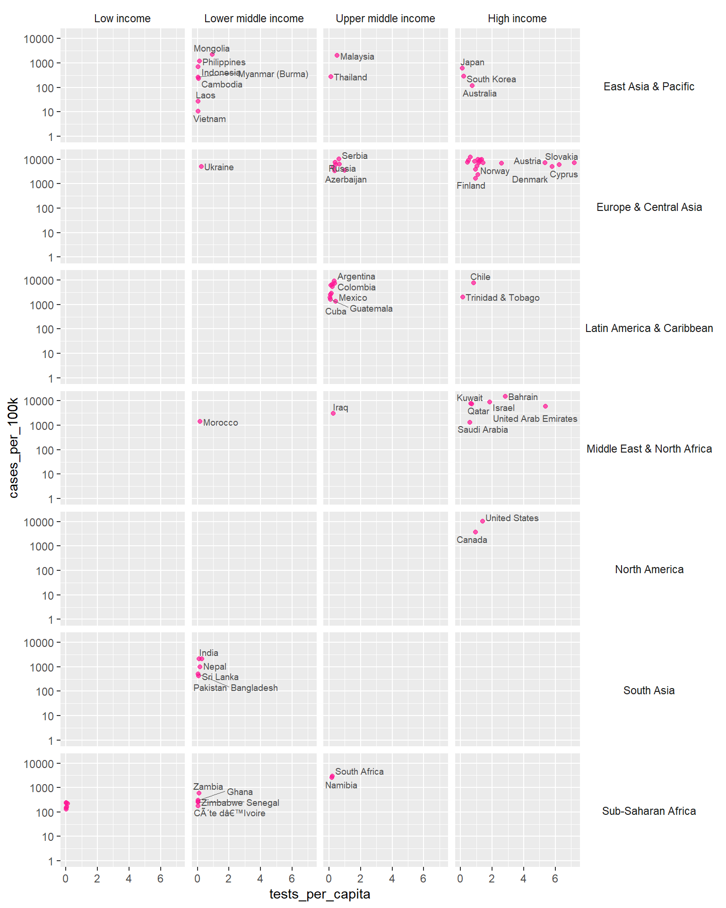